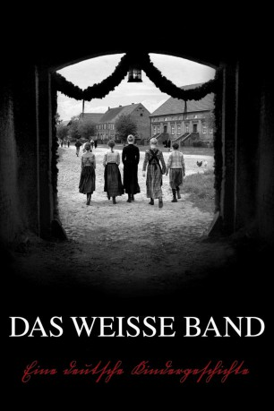

#465 Das Weiße Band
Alternativ: The White Ribbon (Englischer Titel)
Auszeichnungen: für 2 Oscars nominiert 1 GoldenGlobes gewonnen
 
 IMDB-Wertung: 7.8 / 10
IMDB-Wertung: 7.8 / 10  Metascore: 82
Metascore: 82 
Ein Dorf im protestantischen Norden Deutschlands. 1913/14. Vorabend des ersten Weltkriegs. Die Geschichte des vom Dorflehrer geleiteten Schul- und Kirchenchors. Seine kindlichen und jugendlichen Sänger und deren Familien: Gutsherr, Pfarrer, Gutsverwalter, Hebamme, Arzt, Bauern – ein Querschnitt eben. Seltsame Unfälle passieren und nehmen nach und nach den Charakter ritueller Bestrafungen an. Wer steckt dahinter?
Jahr: 2009
Dauer: 144 Minuten
FSK: 12
Land: Deutschland Studio: X Verleih AGTonspuren:
Untertitel:
Auflösung: 1080p (1920x1040) Größe: 6993 MB
Genre: Drama, Geschichte, Mystery, Thriller
Regisseur: Michael Haneke
Drehbuch: Michael Haneke, Michael Haneke
Soundtrack:
Darsteller:
Datei: X:\2009(N-Z)\Weiße Band, Das (2009, FSK12, 1920x1040).mkv seit 25.02.2015
Festplatte: HD 2009(G-Z)-2010(A-F)
 Es gibt insgesamt 99 Filme in der Gruppe '2009(N-Z)'
Es gibt insgesamt 99 Filme in der Gruppe '2009(N-Z)'